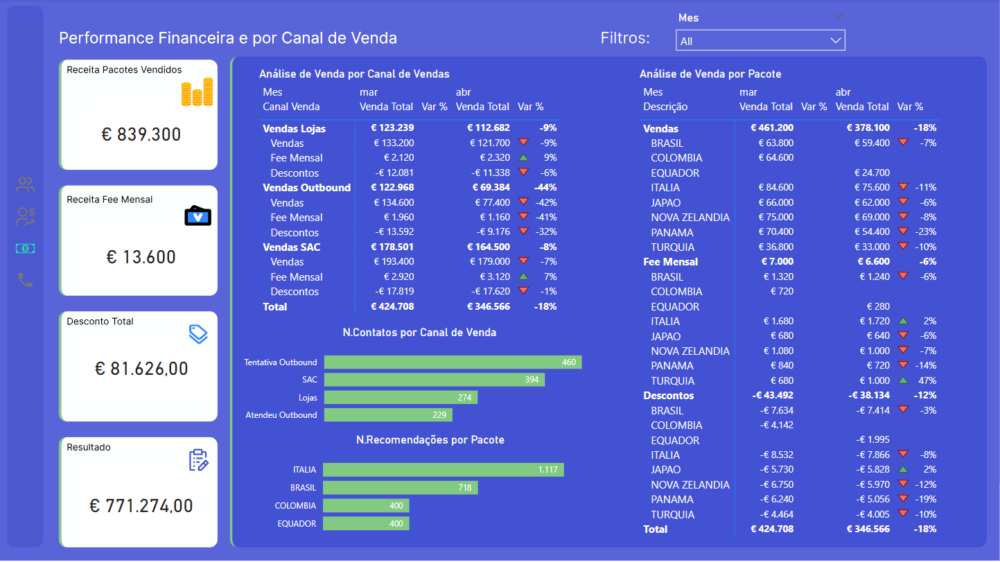
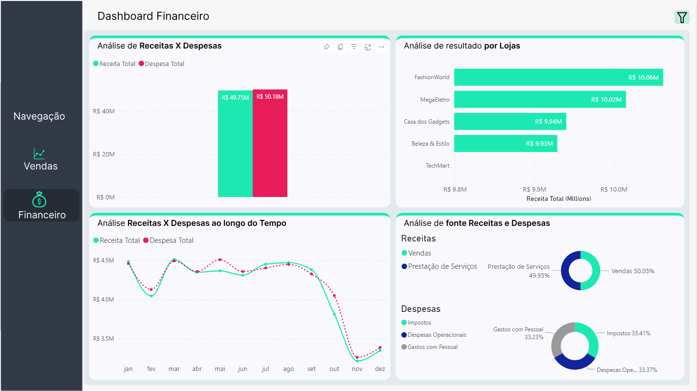
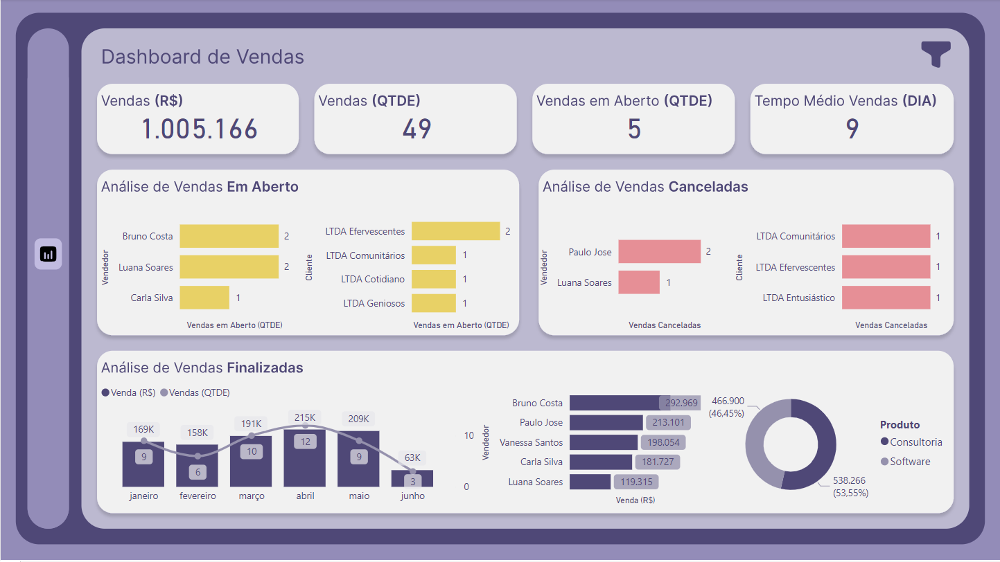

Linguagens de Programação e Banco de Dados
- Python com foco em análise de dados
- VBA para automação de processos
- SQL para consultas
Neste espaço, apresento meus projetos de análise de dados, refletindo minha aprendizagem contínua e aprimoramento de habilidades. Conforme evoluo, atualizo este portfólio com novos insights e soluções práticas. Sinta-se à vontade para entrar em contato através dos links no final da página.

Minha jornada no mundo dos dados começou no final de 2018, em uma startup de consultoria financeira. Aqui, desenvolvi habilidades essenciais em extração, limpeza e organização de dados, além de me especializar na apresentação de resultados usando Power BI. Esse período me ensinou a valorizar a solução de problemas e o planejamento estratégico, indo além das ferramentas utilizadas. Essa experiência me fez compreender que o sucesso na análise de dados está em entender e resolver questões de negócios, com as ferramentas e linguagens de programação servindo como meios para implementar essas soluções. Atualmente, estou empenhado em expandir minhas habilidades nesta área, e este portfólio é um reflexo de projetos onde apliquei meu conhecimento para gerar insights a partir de dados.
Dashboard desenvolvido para uma agência de viagens, focado na análise de vendas e perfil de clientes. Utilizando um dataset específico, o dashboard revela tendências de vendas, padrões de compra e preferências dos clientes. Foi projetado para ser intuitivo, permitindo análises detalhadas sobre destinos populares e comportamento de compra, auxiliando a agência em decisões baseadas em dados.
Dashboard desenvolvido para uma rede de lojas, focado no acompanhamento de vendas e métricas financeiras. O projeto facilita a visualização e análise de indicadores chave como receita e desempenho de vendas. Esta ferramenta interativa permite que a gestão monitore eficientemente o desempenho financeiro das lojas, otimizando a tomada de decisão baseada em dados.
Dashboard desenvolvido para o acompanhamento de ordens de serviço, integrando dados operacionais para melhorar a gestão e eficiência. Ele exibe informações em tempo real sobre o status das ordens, prazos, e desempenho da equipe de serviço. A ferramenta foi projetada para otimizar processos, identificar gargalos e aprimorar a satisfação do cliente, sendo uma solução valiosa para o controle e planejamento dos serviços.

Desenvolvi um dashboard freelance para um pequeno empresário, focado no acompanhamento de suas vendas. A ferramenta personalizada exibe tendências de vendas e desempenho de produtos, facilitando a análise e a tomada de decisões estratégicas para o negócio.

Neste projeto, foi treinado um modelo de regressão para fazer a previsão de vendas das próximas 6 semanas das lojas Rossmann. Os resultados da previsão podem ser consultados por um bot do telegram, onde o usuário informa o número da loja e o modelo retorna a previsão de vendas das próximas 06 semanas.
Também foram definidos 03 tipos de cenários: um pessimista, um provável e um otimista.Desenvolvi um projeto de web scraping focado em uma loja de celulares, usando a biblioteca Selenium. Com conhecimentos recém-adquiridos em web scraping, criei um script em Python que automatizou a coleta de informações sobre os modelos de celulares, incluindo nomes, preços e especificações. Utilizei o Selenium para navegar pelas páginas dinâmicas da loja, garantindo que nenhum dado fosse perdido. Depois de coletar os dados, utilizei bibliotecas Python para organizá-los e exportei-os para um arquivo Excel. Esse projeto não só me deu prática em web scraping, mas também me ensinou sobre automação e manipulação de dados de forma direta e aplicável.

Coleta de dados de imóveis mediante api do idealista. A ideia é coletar os dados e treinar modelos que possam fazer predições sobre o preço de imóveis baseado em suas características.